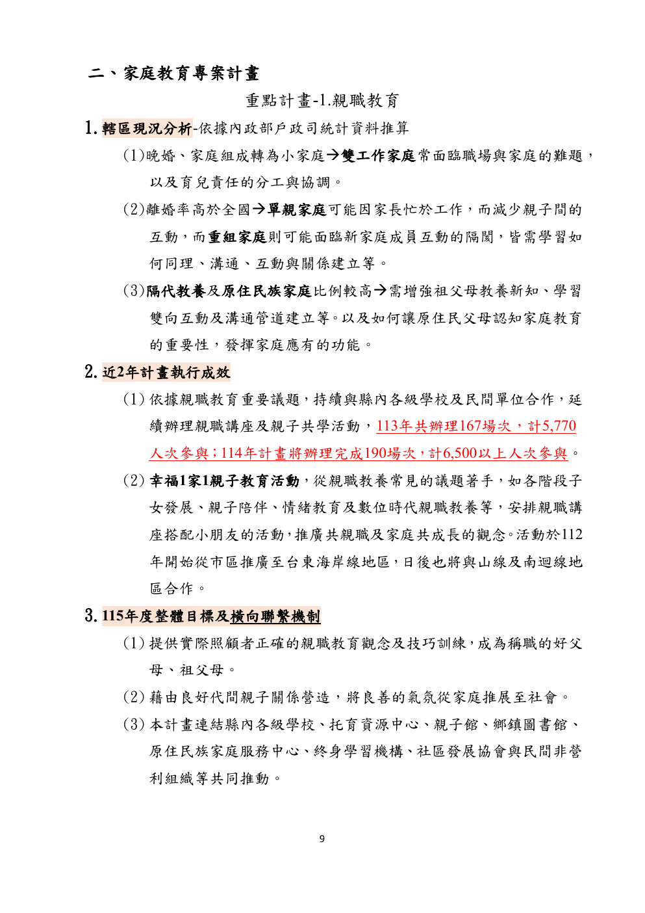
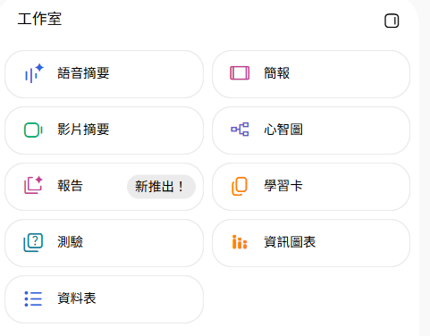

Gemini 工作流
Drive 與 Gmail 找資料、比較版本，Deep Research 找證據，Canvas 製作離線工具。
2026.10.16 · 家庭教育中心 AI 培力第三堂
讀懂年度計畫，完成子計畫，再把可信資料做成可用網頁。
01 · 課程銜接
Drive 與 Gmail 找資料、比較版本，Deep Research 找證據，Canvas 製作離線工具。
整理總體計畫與外部來源，產生子計畫，再交給 Gemini Canvas 製作網頁。
02 · 離開教室前
依據總體計畫與補充來源完成草案，人工查核後下載為 Word。
把已確認的子計畫內容轉成活動說明、執行檢核或成果儀表板。
03 · 三小時配置
總體計畫查詢、Fast Research、子計畫報告、人工查核、匯出 Word。
開啟同一個 Notebook，選擇網頁用途，生成、測試並完成兩項修改。
04 · 免費帳號版本
使用可登入 Gemini Notebook 與 Gemini 的 Google 帳號。
建議使用最新版 Chrome，允許開啟新分頁與下載檔案。
能建立 Notebook、加入 PDF，並看到來源摘要。
側欄若看不到 Notebooks，改走文件轉交備援路徑。
PART 01 · GEMINI NOTEBOOK
05 · 工具定位
06 · 上傳以前
公開計畫、公開研究、合成資料、已去識別化且有權使用的文件。
內部草稿、未確認摘要、含聯絡資訊或可辨識身分的資料。
真實名冊、兒少個案、帳密、身分證號與無權上傳的文件。
07 · 第一份來源

08 · 先看地圖
09 · PDF 不只要上傳成功
如果答案和原始 PDF 不一致，先不要繼續產生子計畫。
10 · 課堂實作
11 · 可直接複製
請只根據「115年家庭教育總體計畫」這份來源，整理其中適合發展成子計畫的活動。請列出所屬計畫、活動名稱、服務對象、活動形式、場次或預計參與人次、主要學習內容、預期成效及來源引用。資料中沒有的日期、地點、承辦人或詳細經費請標示「計畫未提供」。
12 · 跨段落整理
請比較總體計畫中幼兒期家長、學齡期家長、青少年期家長與婚姻教育服務對象的需求、活動形式及學習內容。整理成表格，指出哪些內容可以作為新子計畫的依據。每一列都必須附上來源引用。
13 · 回答之後
找出重要數字與主張。
確認原文段落與上下文。
可用、要改、要查、未確認。
14 · 找一份補充來源
先看候選來源的標題、說明與原始連結，再決定是否加入 Notebook。
指定總體計畫，跨段落整理活動內容，並用引用回到原文。
15 · 一次只找一個需求
請搜尋臺灣政府、教育、醫療或學術機構發布的資料，協助設計一項家庭教育活動。先列出候選來源的發布單位、日期、與子計畫的關聯及限制，再由我選擇要加入 Notebook 的來源。不要自動把所有搜尋結果加入。
16 · 加入以前先審查
政府、教育、醫療、學術或可信機構。
知道資料何時發布，避免把舊規定當新資訊。
能支持需求分析、活動設計或評估方法。
研究發現不等於活動一定有效。
60 分鐘檢查點
完成：總體計畫已加入、活動盤點已完成、補充來源已選好。
PART 02 · DOCUMENT REPORT
17 · 不從空白開始
18 · 先由人做決定
19 · AI 不替你決定
日期、地點、講師、負責人、核定金額。
正式公文、經費表、合作單位資料、場地規定。
活動流程、宣傳方法、評估工具，但要標明尚未核定。
20 · Studio 文件報告
請根據我選取的「115年家庭教育總體計畫」、Fast Research 補充來源及子計畫工作單，產生一份家庭教育活動子計畫草案。內容包含計畫名稱、計畫依據、現況與需求分析、服務對象、計畫目標、活動內容與執行方式、預計場次及參與人次、合作資源與工作分工、經費需求、預期成果、評估方式、風險與資料安全、待確認事項及參考來源。不得自行虛構日期、地點、講師、承辦人或經費數字。總體計畫明確提供的資訊要附上引用。外部研究發現與活動設計建議必須分開。缺少內容標示「待人工確認」。使用臺灣繁體中文及正式行政企劃語氣。
21 · 報告完成後
22 · 文件交付
NEW這是最新的 Gemini Notebook 更新
23 · 前兩小時完成標準
尚未完成者使用講師提供的子計畫範例，跟上最後一小時的 Canvas 實作。
PART 03 · GEMINI × CANVAS
Notebook sources + Gemini tools + Canvas24 · 連動入口
來源、引用、文件報告、Studio 成果
Notebook 脈絡、網路搜尋、Canvas 與其他工具
25 · 切換入口時要知道
適合查詢、比較、引用與產生文件報告。
來源範圍較明確可搭配網路搜尋與 Canvas，但仍要限制不得擅自補寫資料。
創作能力較多26 · 免費帳號備援
在 Gemini 側欄開啟自己的 Notebook，再選用 Canvas。
把子計畫匯出 Docs，在一般 Gemini 加入文件後選用 Canvas。
貼上人工查核過的子計畫節錄，再使用相同的 Canvas 提示詞。
27 · 每組只做一種
目的、對象、流程、注意事項與常見問題。
籌備、活動當日、活動後的可勾選工作。
用合成資料呈現參與率、滿意度與回饋分類。
28 · 網頁初版
請根據目前 Notebook 中的總體計畫、補充研究來源及已完成的子計畫草案，使用 Canvas 製作一個單頁互動網頁。網頁用途為【家長活動說明／承辦人執行檢核／活動成果儀表板】。只能使用 Notebook 來源及子計畫中已有的資訊；不得自行增加日期、地點、經費、講師、承辦人或活動成效；沒有確認的資訊顯示「待確認」；使用臺灣繁體中文；不使用真實個資；手機及電腦都能閱讀；網頁中註明內容需由承辦人依正式核定資料確認。請先完成可操作初版，之後我會測試並提出修改。
29 · 路線 A
30 · 路線 B
31 · 路線 C
32 · 額度留給主要成果
33 · 上傳前先看一遍
子計畫名稱與一項待確認內容
網頁用途與主要使用者
一項從來源中修正的錯誤
正式使用前還需要補什麼資料
34 · 如果還有時間

用今天完成的子計畫草案，產生給主管或合作學校看的活動說明簡報。
把總體計畫裡的活動整理成表格：類別、對象、場次、人次與來源頁碼，方便追蹤。
35 · 加碼提示詞
請根據我選取的子計畫草案與「115年家庭教育總體計畫」，製作一份 8 頁的活動說明簡報，對象是中心主管與合作學校。頁面依序為：活動名稱與一句話目標、需求背景、服務對象、活動流程、預計場次與人次、分工與資源、預期成效、待確認事項。每頁不超過 3 個重點。數字與日期必須來自來源，缺少的內容標示「待確認」。使用臺灣繁體中文。
請從「115年家庭教育總體計畫」整理一份活動一覽資料表，欄位為：計畫類別、活動名稱、服務對象、辦理方式、預計場次、預計人次、合作單位、來源頁碼。每一列是一項活動。來源沒有寫明的欄位填「未載明」，不要自行推估數字。使用臺灣繁體中文。
36 · 第三堂完成
從單次工具使用，繼續前進到可以重複執行的任務流程。